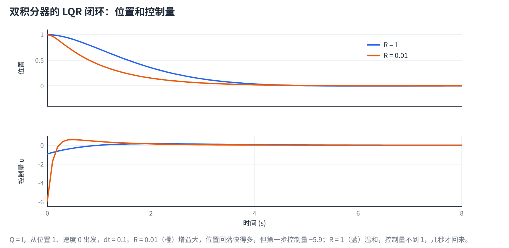
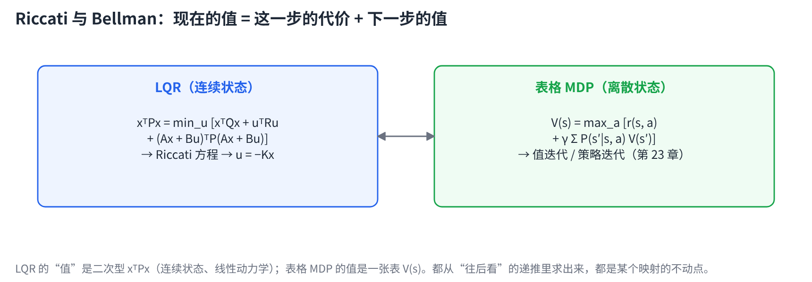
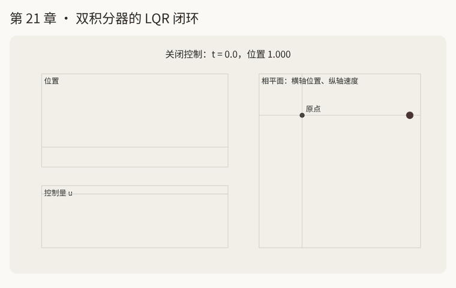

第 21 章 · 动力系统与控制的数学：线性化、离散化、稳定性、LQR 与 Bellman 不动点
本地运行
git clone https://github.com/wikieden/math-and-eval-stats
cd math-and-eval-stats/code/notebooks
pip install jupyterlab torch numpy
jupyter lab ch21_dynamics_control.ipynb也可以下载后直接用 VS Code 打开 .ipynb 运行。需要 GPU 的章节在 Colab 里选「代码执行程序 → 更改运行时类型 → GPU」。
本章回答：倒立摆为什么"站不住"，数学上看哪一个数？连续时间的模型怎么变成控制器每 10 毫秒算一次的离散模型？LQR 的反馈增益从哪来？强化学习的 Bellman 方程和这些有什么关系？
讲解日期：2026-11-25 · 上一章：第 20 章 状态估计 · 下一章：第 22 章 数值计算
对应原文：Särkkämaterials/text/books/sarkka-bayesian-filtering-smoothing-2e.txt第 4 章"连续时间模型的离散化"（目录 L74–L77）；LQR 的推导见《机器人运控与强化学习》第 12 章和本书第 25 章；Bellman 方程见《从零学强化学习》第 8 章和本书第 23 章
本章缩写：ODE = Ordinary Differential Equation（常微分方程）；A、B = 连续时间的状态矩阵、输入矩阵；A_d、B_d = 离散化后的；ZOH = Zero-Order Hold（零阶 / 保持：一个周期内控制量不变）；e^{At} = 矩阵指数；LQR = Linear Quadratic Regulator（线性 / 二次 / 调节器）；Q、R（本章）= 状态代价、控制代价的权重矩阵；K = 反馈增益；P = Riccati 方程的解；MDP = Markov Decision Process（马尔可夫决策过程）；γ = 折扣因子。全部缩写见 附录 · 缩写与术语表
讲解
第一步：线性化：在平衡点附近，非线性系统像 ẋ = Ax（2026-11-25）
类比：地球是圆的，但你家门口那条街看起来是平的。
单摆：\(\ddot\theta = -\frac gl\sin\theta\)，状态 \(x = [\theta, \dot\theta]\)。在平衡点 θ₀ 附近，sin θ ≈ sin θ₀ + cos θ₀·(θ − θ₀)：
例子（g/l = 9.81）：
| 平衡点 | A | 特征值 | 含义 |
|---|---|---|---|
| 下垂 θ = 0 | [[0, 1], [−9.81, 0]] | ±3.132i | 纯虚数：来回摆，不发散也不衰减 |
| 倒立 θ = π | [[0, 1], [9.81, 0]] | 3.132、−3.132 | 有一个正实部：稍一偏就倒，按 e^{3.13t} 发散 |
一句话：在平衡点把非线性系统线性化成 ẋ = Ax；A 的特征值决定附近的行为。
第二步：稳定性看特征值（2026-11-25）
类比：碗底的球（稳）和山顶的球（不稳）。
| 稳定条件 | |
|---|---|
| 连续时间 ẋ = Ax | 所有特征值实部 < 0 |
| 离散时间 x_{k+1} = A_d x_k | 所有特征值的模 < 1 |
原因：解是 \(e^{\lambda t}\) 或 \(\lambda^k\) 的组合，实部 > 0 或模 > 1 的分量会指数增长。
例子：倒立摆离散化（dt = 0.1）以后，特征值的模是 1.368 和 0.731：有一个 > 1，不稳定（e^{3.132×0.1} = 1.368）。
一句话：连续时间看实部 < 0，离散时间看模 < 1；倒立摆有一个特征值越界，必须靠控制拉回来。
第三步：ZOH 离散化：控制器只能每 dt 改一次指令（2026-11-25）
类比：开车时每 0.1 秒才能调一次方向盘，中间保持不动。
控制量在 [k·dt, (k+1)·dt) 里不变（零阶保持），积分 ẋ = Ax + Bu 一个周期，精确得到：
（Särkkä 第 4 章）
例子：双积分器（推一个小车，ẍ = u），状态 [位置, 速度]，dt = 0.1：
就是中学物理的"位移 = v·t + ½a·t²"。对比欧拉法 \(A_d \approx I + A\,dt\)、\(B_d \approx B\,dt\) = [0, 0.1]：漏掉了 dt²/2 那一项。
一句话：ZOH 离散化 A_d = e^{A dt}、B_d = ∫e^{As}ds·B 是精确的；欧拉法 I + A·dt 只是一阶近似。
第四步：LQR：在代价最小的意义下最好的线性反馈（2026-11-25）
类比：又想快点到位（状态代价 Q），又不想油门踩太猛（控制代价 R），在两者之间找最划算的方向盘打法。
P 是离散代数 Riccati 方程的解（推导在第 25 章；直觉：P 是"从状态 x 出发、以后都最优控制，总代价 xᵀPx"）。
例子（双积分器，Q = I）：
| R | K | 闭环特征值的模 |
|---|---|---|
| 1 | [0.917, 1.636] | 0.917、0.917（稳） |
| 0.01（控制便宜） | [5.894, 6.821] | 0.904、0.384（更小：收敛更快、出力更猛） |
R 调小 → 增益变大 → 收敛快但需要大力矩；R 调大 → 温和。

图 21-1 · 双积分器从位置 1 出发，R = 1（蓝）和 R = 0.01（橙）两种 LQR 的位置和控制量；R 小的收敛快、控制峰值大（第一步 −5.9）场景代码：用 scipy 求 LQR（就是本章代码的写法）：
from scipy.linalg import solve_discrete_are
P = solve_discrete_are(Ad, Bd, Q, R) # 离散代数 Riccati 方程
K = np.linalg.solve(R + Bd.T @ P @ Bd, Bd.T @ P @ Ad) # u = −Kx
一句话：LQR 用二次代价换出线性反馈 u = −Kx；K 由 Riccati 方程的解 P 给出，R 越小越激进。
第五步：Bellman 方程是一个不动点方程（2026-11-25）
类比：LQR 的"从这里出发以后的总代价 xᵀPx"和强化学习的值函数 V(s) 是同一个概念。
固定策略下，值函数满足
（P 这里是状态转移矩阵）这是一个不动点方程：V 是映射 \(T(V) = r + \gamma PV\) 的不动点。可以直接解线性方程 \(V = (I - \gamma P)^{-1}r\)，也可以反复套 T 直到不动。
例子（编的 2 状态 MDP：转移 [[0.8, 0.2], [0.3, 0.7]]、奖励 [1, 0]、γ = 0.9）：
| 方法 | V |
|---|---|
| 解线性方程 | [6.7273, 4.9091] |
| 反复套 V ← r + γPV，149 次误差 < 10⁻⁶ | [6.7273, 4.9091] |
为什么反复套一定收敛、要套多少次，见第 23 章 压缩映射。

图 21-2 · 左：LQR，代价是二次型 xᵀPx；右：表格型 MDP，值函数是一张表；两者都满足"现在的值 = 这一步的代价 + 下一步的值"一句话：Bellman 方程 V = r + γPV 是不动点方程；LQR 的 xᵀPx 就是连续状态、二次代价下的值函数。
动画演示：倒立摆的线性化和 LQR 闭环

可交互版：animations/21-dynamics-control.html（滑块调控制代价 R；勾选"关闭控制"）。
怎么看：
- 左边是双积分器小车的位置随时间变化，从 1 出发；右边是相平面（位置、速度）上的轨迹（第三、四步）；
- 关闭控制：小车停在 1 不动（双积分器没有控制就不会自己回来）；
- R 从 1 拖到 0.01：轨迹更快回到原点，下方的控制量峰值更大（第四步）。
练习与作答记录
题 1（第一、二步）：阻尼单摆 \(\ddot\theta = -9.81\sin\theta - 0.5\dot\theta\)，在下垂点线性化，写出 A，特征值的实部是多少？稳不稳？
作答：（待作答）
题 2（第三步）：一阶系统 ẋ = −2x + u，dt = 0.1。写出 ZOH 离散化的 A_d、B_d（保留 4 位），和欧拉法的结果比较。
作答：（待作答）
题 3（第五步）：单状态 MDP，每步奖励 1、永远留在原地、γ = 0.95。V 是多少？从 V₀ = 0 开始反复套 V ← 1 + γV，第 3 次是多少？
作答：（待作答）
口诀
门口街道看着平，平衡点处线性化，特征值定命运；
连续看实部、离散看模，倒立摆有一个越界；
零阶保持积一周期，A_d 是矩阵指数；
LQR 用二次代价换线性反馈，R 小就激进；Bellman 是不动点，xᵀPx 就是值函数。
本章复习卡片
ST76（线性化与稳定性判据：连续看实部、离散看模）、ST77（ZOH 离散化公式）、ST78（LQR 的形式、R 的作用、和 Bellman 的关系）。练习做完后，按答错、卡住的地方补上。
附录 · 延伸阅读
留给以后深入学习用，不影响本章主线。★ 是建议先读的。
推荐阅读
| 读什么 | 读哪里 | 读它为了什么 |
|---|---|---|
| ★ 《机器人运控与强化学习》第 12 章 LQR | 全章 | LQR 在机器人上的用法 |
| ★ 《从零学强化学习》第 8 章 Bellman | 全章 | Bellman 方程从零讲起 |
| Särkkä | 第 4 章（目录 L74–L77） | 连续时间模型的离散化，包括带噪声的情况 |
Underactuated Robotics LQR 章（robot-motion-rl/materials/text/underactuated-lqr.txt） |
全章 | 倒立摆、可控性、Riccati 推导（第 25 章展开） |
数学原理
- 线性化：\(\dot x = f(x, u)\) 在 (x₀, u₀) 处 \(A = \partial f/\partial x\)、\(B = \partial f/\partial u\)（第 13 章的雅可比）。
- 矩阵指数：\(e^{At} = \sum_k (At)^k/k!\)；A 可对角化时 \(e^{At} = Ve^{\Lambda t}V^{-1}\)，所以特征值 λ 对应 \(e^{\lambda t}\)。双积分器的 A 是幂零矩阵（A² = 0），\(e^{A\,dt} = I + A\,dt\) 精确成立。
- ZOH 的一次性算法：构造 \(\begin{bmatrix}A & B\\0 & 0\end{bmatrix}\) 的矩阵指数，左上块是 A_d、右上块是 B_d。
- Bellman 与 Riccati：二次代价、线性动力学下，值函数一定是二次型 \(V(x) = x^\top Px\)，代进 Bellman 方程 \(V(x) = \min_u[x^\top Qx + u^\top Ru + V(Ax + Bu)]\)，就得到 Riccati 方程。
公式清单
| 公式 | 意思 |
|---|---|
| \(A = \partial f/\partial x\vert_{x_0}\) | 线性化 |
| 连续 Re λ < 0；离散 |λ| < 1 | 稳定判据 |
| \(A_d = e^{A\,dt}\)，\(B_d = \int_0^{dt}e^{As}ds\,B\) | ZOH 离散化 |
| \(u = -Kx\)，\(K = (R + B^\top PB)^{-1}B^\top PA\) | 离散 LQR |
| \(V = r + \gamma PV\)，\(V = (I - \gamma P)^{-1}r\) | Bellman 期望方程 |
代码对照：把本章的数字用代码算一遍
代码在仓库本地
math-and-eval-stats/solutions/chapter-code/ch21_dynamics_control.py，配套测试tests/test_ch21.py：
bash cd math-and-eval-stats/solutions/chapter-code uv run python ch21_dynamics_control.py uv run pytest tests/test_ch21.py
讲义 ↔ 代码：
| 讲义 | 公式 | 写法 | 跑出来 |
|---|---|---|---|
| 第一步 线性化 | A(θ₀) | pendulum_A(np.pi) |
特征值 ±3.132 |
| 第二步 离散稳定性 | |λ| | zoh(pendulum_A(np.pi), B, 0.1) |
1.368、0.731 |
| 第三步 ZOH | 矩阵指数 | zoh(a, b, 0.1) |
A_d = [[1, 0.1], [0, 1]]，B_d = [0.005, 0.1] |
| 第四步 LQR | Riccati | lqr_gain(ad, bd, I, [[1]]) |
K = [0.917, 1.636] |
| 第五步 Bellman | 不动点 | bellman_policy_value() |
[6.7273, 4.9091]，149 次 |
关键几行：
big = np.zeros((n + m, n + m)); big[:n, :n], big[:n, n:] = a, b
e = expm(big * dt) # 一次矩阵指数
ad, bd = e[:n, :n], e[:n, n:] # 左上 A_d，右上 B_d
p = solve_discrete_are(ad, bd, q, r) # Riccati
v = r + gamma * p @ v # Bellman 迭代
代码里才看得到的 3 件事：
- 扩展矩阵的技巧：直接算 ∫e^{As}ds 需要 A 可逆；把 A、B 拼成一个大矩阵再取指数，对奇异的 A（比如双积分器）也成立。
solve_discrete_are的参数顺序：(A, B, Q, R)，和连续时间的solve_continuous_are同样的顺序；混用离散 / 连续版本是常见错误。- 特征值打印成复数：
np.linalg.eigvals对实矩阵也可能返回复数（共轭对），比较稳定性时要取实部或模。
自己改一改（不影响练习答案）：
- 把 LQR 的 Q 改成 diag(10, 1)（更在意位置误差），K 怎么变？
- 在
bellman_policy_value里把 γ 改成 0.99，迭代次数变成多少？